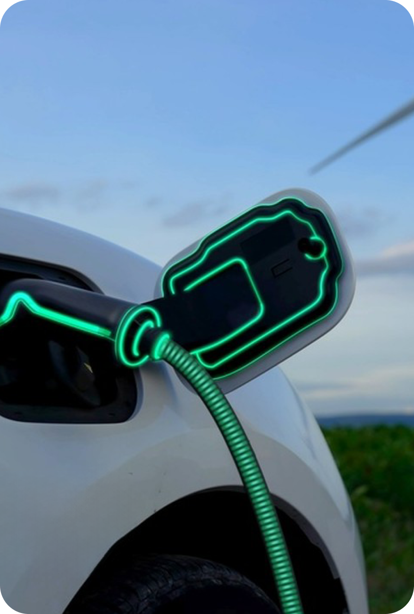
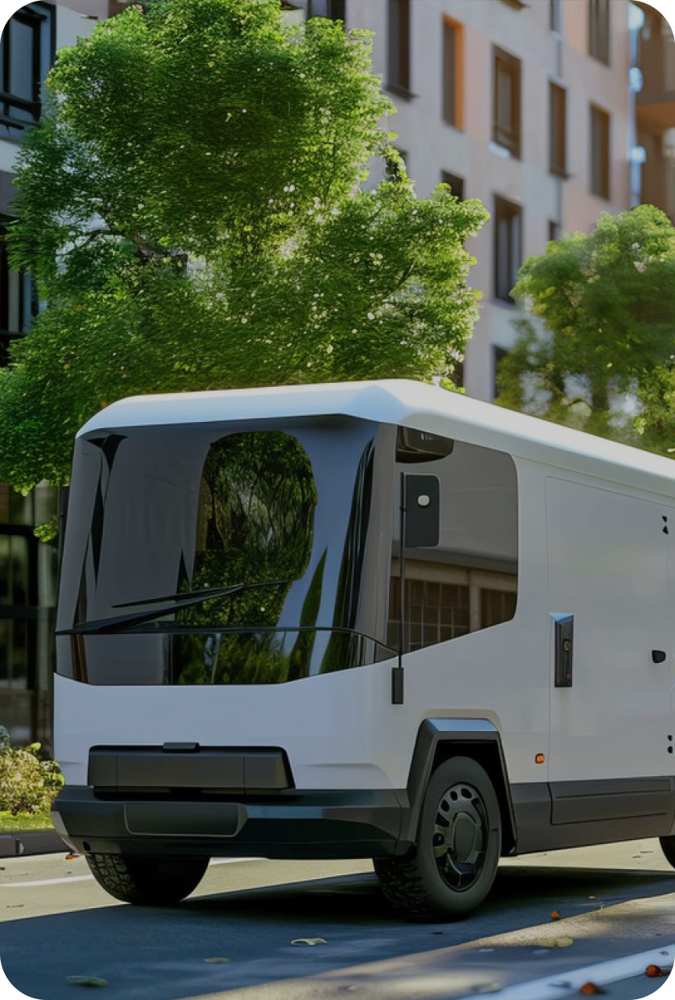
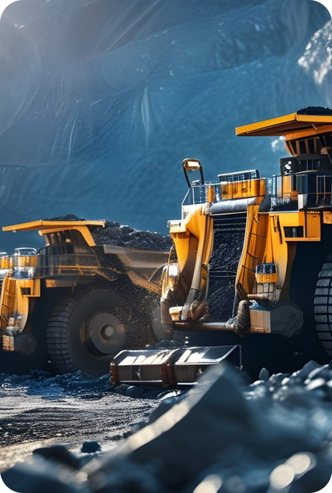
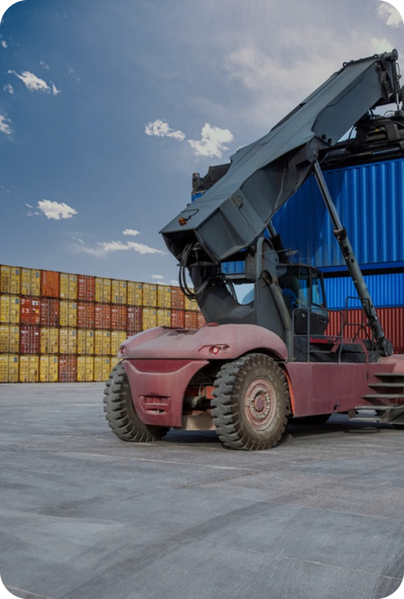
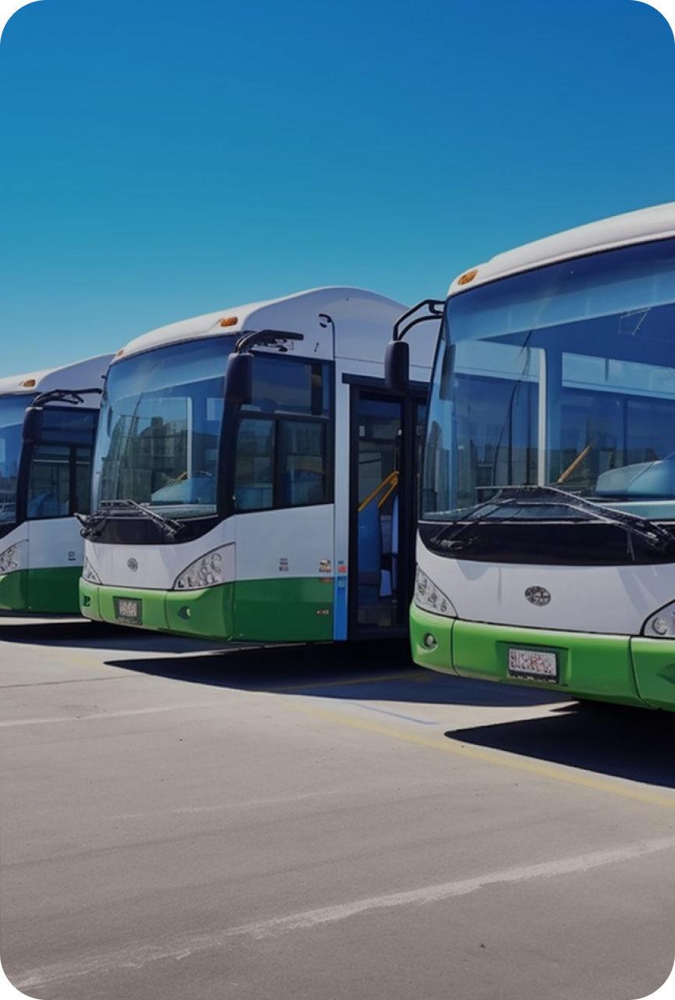
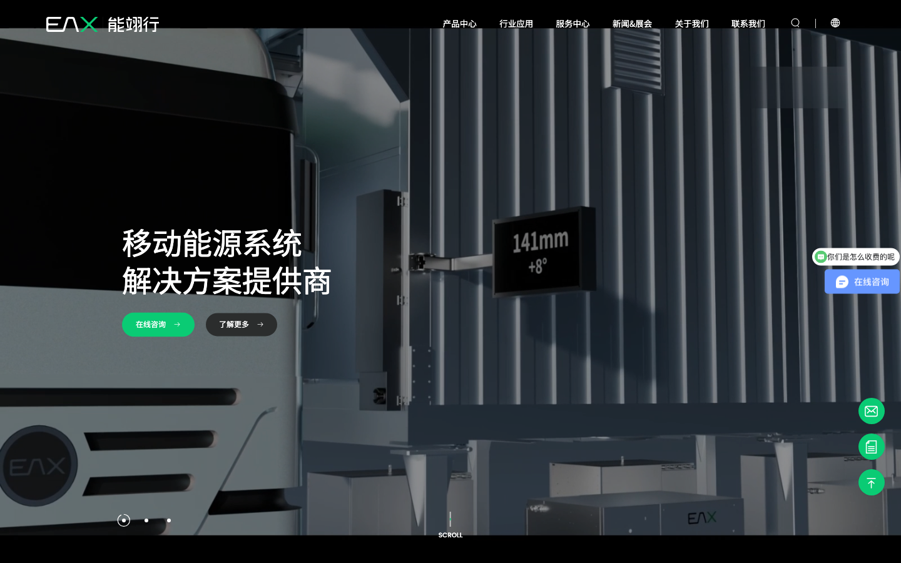
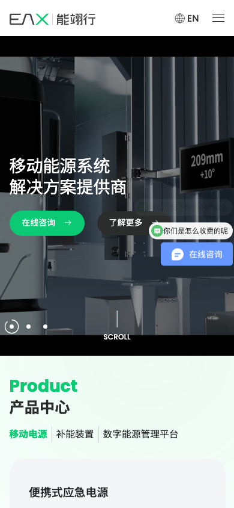

ENERAX / CASE 004POWER AT EASE
从一辆车开始，
读懂一套能源系统
能翊行把设备、补能、数字平台和行业场景组织成一条 B2B 说服路径：先让人看见“电”的动作，再让人确认产品和应用。
原站视频、设备图和统计数字仅作内部研究引用；案例中的判断不等于 Enerax 官方技术结论。
01 / CASE SNAPSHOT
把“电”从抽象能力，
翻译成看得见的动作
Enerax 首页的有效之处，在于它不从公司简介开场，而是用换电设备、移动充储车和平台界面把能源能力先变成可视的工作流。
车、柜、站与电池先进入视线
黑色 Hero、设备视频和“移动能源系统”标题，让访客先理解这是一个持续运转的补能现场。
SCENE / MOTION三类入口对应三种采购任务
移动电源、补能装置、数字能源管理平台分别承接硬件、站端和软件平台的比较。
PRODUCT / TASK行业应用把设备放回运营约束
出租车、城市配送、矿山、港口、钢厂等场景以图像和一句痛点说明完成第一轮匹配。
APPLICATION / CONTEXT统计、新闻与伙伴形成可信度尾声
全球布局、研发占比、专利、交付和新闻把“解决方案提供商”从一句口号推进到可继续核验的线索。
PROOF / NEXT STEP02 / ENERGY ARCHITECTURE
三层产品架构，
对应三种决策速度
导航不是把产品名称堆在一起，而是先按移动电源、补能装置和数字平台分组，再把系列和单品放进同一个采购路径。
可迁移条件
当产品既有硬件、站端设备又有软件平台时，先按用户决策任务分组，再用系列名承接规模化目录；不要让“产品中心”变成没有优先级的 SKU 墙。
03 / PRODUCT COMPOSITION
图片先建立信任，
卡片再完成产品确认
原站产品区把一个分类里的多个单品压进 Swiper。案例页保留这种扫描效率，但将图片、名称、分类、原站入口和键盘切换做成稳定内容。
PRODUCT SAMPLE 01 · MOBILE POWER
便携式应急电源
用“设备名称 + 场景分类 + 图片 + 详情入口”建立第一轮采购判断；性能参数、适配范围和交付条件应继续下沉到详情页。
进入原站产品详情交互提示
hover 只改变图片层次；点击、触摸、焦点和方向键都应能切换同一产品。
04 / APPLICATION MATRIX
行业场景不是装饰，
而是产品筛选器
Enerax 将高频短驳、重载运输、固定路线和连续作业等运营特征写进场景卡片，让访客可以从自己的工况反推设备入口。

01 / CONTINUOUS OPERATION
出租车 / 网约车
两班倒与短停靠时间，把“快速补能”变成首要决策条件。
查看场景 ↗
02 / LAST MILE
城市配送
最后一公里与燃油轻卡替代，连接移动补能和轻型车辆。
查看场景 ↗
03 / HEAVY DUTY
矿山矿产运输
重载爬坡、高频往返和连续作业，适合从工况切入换电站配置。
查看场景 ↗
04 / FIXED ROUTE
港口短驳
固定路线、重载与 24 小时作业，让补能网络的可用率成为重点。
查看场景 ↗05 / PRECISION
钢厂短驳
高温、重载、高频、严精度的“四高一严”，要求设备与运营一起解释。
查看场景 ↗
06 / INTERMODAL
公水联运
港口、船闸和陆运的转接，适合用移动补能和固定站点共同回答。
查看场景 ↗05 / POWER AT EASE
让电收放自如
原站用一句易记的英文主张和五个统计数字，把设备目录收束为能源能力。可迁移的不是数字，而是“使命句 + 证据条”的收束方式。
06 / MOTION AUDIT
动效先服务节奏，
再服务视觉炫技
首页源码叠加 Swiper、WOW、GSAP、ScrollTrigger、文字拆分和计数器。它形成了鲜明节奏，也留下了可访问性、性能和移动端控制的改造空间。
CHAPTER 01 · HERO
先让访客看见“电”正在被使用
视频 poster、设备近景、黑色导航和绿色 CTA 组成第一轮品牌判断；视频必须有静态 poster、暂停控制和文字替代。
- 场景先于规格
- 自动播放默认静音
- 文字不能只存在于画面
01 / 05
07 / LIVING PROOF
新闻与伙伴，
让解决方案继续发生
首页新闻用日期和事件把公司从静态目录拉回真实行业，伙伴墙则用密集 Logo 暗示生态，但生产项目必须给每条证据提供来源和上下文。
08 / RESPONSIVE AUDIT
桌面像调度中心，
手机必须先能选、再能读
原站桌面 Hero 强调设备尺度与导航密度，手机端切换为白色菜单、单列产品与横向/纵向内容。案例页把这一组对比保留下来，提示 AI 先检查交互可达性。


KEEP
值得复用
- 黑色设备背景与绿色动作色形成强识别
- 产品、行业、能力、新闻顺序清楚
- 场景卡片能解释设备为什么被需要
- 统计条让首页有记忆点
REFINE
需要重构
- 移除 user-scalable=no，保留缩放能力
- 不要用 antiClone 禁止复制与右键
- 视频要提供可暂停、poster 和文字替代
- 咨询入口不能只依赖 javascript: 链接
09 / AI INSTRUCTIONS
给 AI 的不是换电站图片，
而是一套决策路径
以下规则可以迁移到新能源设备、工业自动化、储能和 B2B 解决方案网站，不复制 Enerax 的企业事实或宣传数字。
Hero 先让人看见动作
当产品价值依赖设备如何运行时，先用真实场景、短使命句和一个动作按钮建立理解，再下沉参数。
产品需要被“看见”
产品按决策任务分组
把硬件、站端、平台拆成不同选择速度；每一层同时拥有系列入口和单品详情，避免 SKU 平铺。
目录跨硬件与软件
场景卡片要写运营约束
高频、重载、固定路线、连续作业等词比“行业领先”更能帮助访客匹配产品。
方案要进入真实工况
数字写清口径与日期
全球布局、专利、研发占比和累计交付都必须标记来源、截止日期、统计口径和验证方。
使用品牌可信度数字
动效有静态退路
Swiper、GSAP、WOW 只能增强节奏；无脚本、键盘、触摸和 reduced-motion 都要能完成相同阅读任务。
首页采用多套动效库
10 / SOURCE ARCHIVE
把一次观察，留成可复核样本
本案例保留首页 HTML、主 CSS、交互 JS、关键设备图、行业场景图、新闻图及桌面/手机截图。完整来源和清理项见 manifest.md。